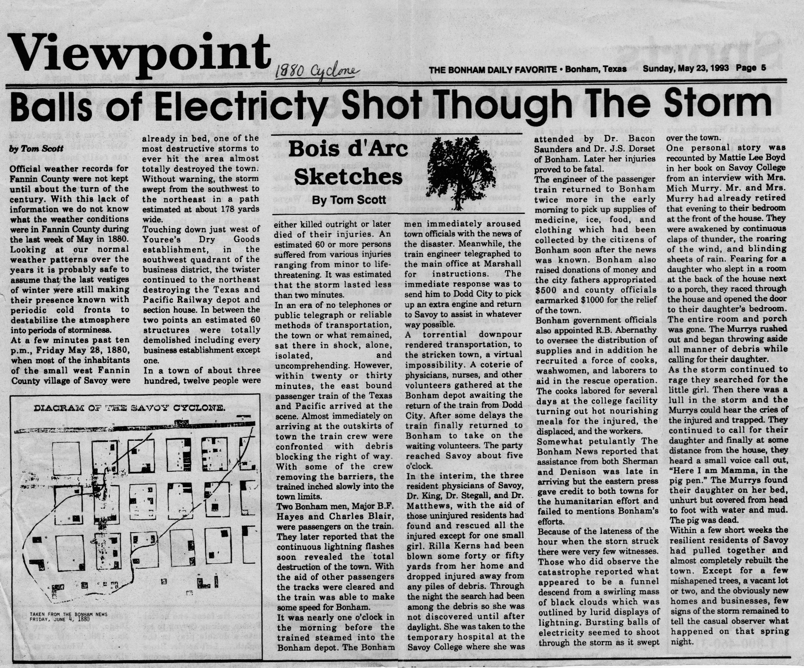

The stories that survive from the 1880 Savoy cyclone are not only the ones about the dead and the injured. Tornadoes leave behind a different kind of story too — the ones that don't quite fit, that hover at the edge of what is physically explicable, that get told at reunions and anniversaries and eventually find their way into newspaper retrospectives because they are too good to lose.
A 1937 piece — written fifty-seven years after the storm, when some survivors were still alive to be interviewed — collected several of the best of them.
Dr. Moore and Sam Harle, caught in the open when the cyclone struck, were blown completely naked. Their clothes were stripped from their bodies by the wind. They survived. They were found, uninjured, without a stitch on them, in the wreckage. The 1937 piece records this with the matter-of-fact tone of a story that has been told so many times it has lost the power to shock and retained only the power to amuse, which is its own kind of survival.
, Vol. 15, No. 25, Ed. 1, Thursday, June 17, 1880.png)
Then there were the cows. Chickens, in a tornado, lose their feathers — the wind strips them the same way it stripped the clothes off Dr. Moore and Sam Harle. But somewhere in the debris field on the morning of May 29, 1880, someone found cows with the feathers of those chickens driven into their hides. The wind had turned chicken feathers into projectiles, embedding them in the skin of cattle with a force that required them to be pulled out afterward. The 1937 retrospective preserved this detail. The 1993 retrospective preserved it again.
In 1993, the Bonham Daily Favorite ran a long piece on the cyclone — more than 113 years after the storm — and collected new testimony. A woman named Mrs. Murry described what she had seen from inside her house when the funnel passed near: balls of electricity, rolling across her floor. This was not the imagination of a frightened woman; ball lightning is a documented if poorly understood phenomenon associated with electrical storms, and a tornado of the 1880 Savoy cyclone's power would have been accompanied by extraordinary electrical activity. But for Mrs. Murry, watching it from inside her house, on the night Savoy was being destroyed, it would have looked like something from a different world entirely.
"Cows were found with the feathers of their chickens driven into their hides by the force of the wind." — 1937 retrospective on the 1880 cyclone
These are the stories that attach themselves to disasters and outlast the official accounts. The death counts change between sources. The injury numbers vary. The dates of individual events shift slightly depending on who remembered what. But the story of the naked doctors — caught in the open, spun clean of their clothes, alive — that one stays consistent across fifty years of retellings. And the feathers in the cows.
A tornado has a physics. The physics is not mysterious. But what it produces, in the particular geography of one small town on one particular night, can look mysterious enough that fifty-seven years later the survivors were still telling the stories, and a hundred and thirteen years later the newspaper was still printing them.
All Tales